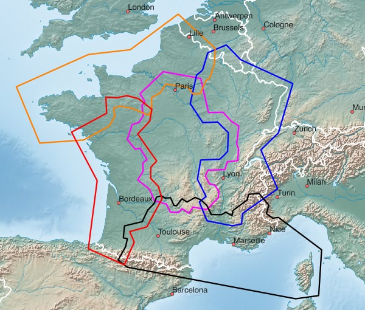
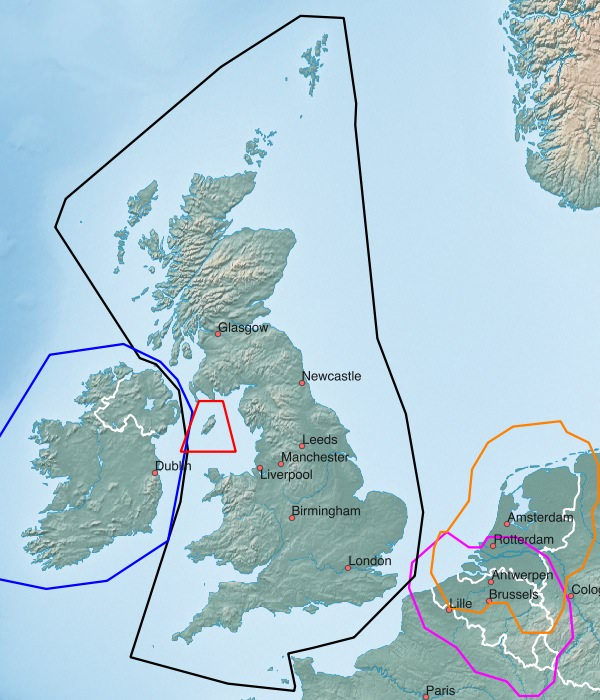

Westeuropa - verfügbare Karten:
| Nordfrankreich | Ostfrankreich | Zentralfrankreich |
| Westfrankreich | Südfrankreich | Andorra |
| Großbritannien (Insel) | Insel Man | Irland (Insel) |
| Niederlande | Belgien |
Hinweise zum Download:
- Klick auf das Netbook Icon im PC-Browser: die Karte wird auf den Personal-Computer geladen
- Klick auf das Locus Map Icon im Android-Browser: Karte+Design werden nach Locus Map geladen
- Klick auf das OruxMaps Icon im Android-Browser: die Karte wird nach OruxMaps geladen
Nord-, Ost-, Zentral-, West-, Südfrankreich, Andorra:

| Nordfrankreich FRA+NORTH 487 MB |
| Ostfrankreich FRA+EAST 707 MB |
| Zentralfrankreich FRA+CENTRE 542 MB |
| Westfrankreich FRA+WEST 470 MB |
| Südfrankreich FRA+SOUTH 561 MB |
| Andorra AND 2 MB |
Großbritannien, Insel Man, Irland, Niederlande, Belgien:

| Großbritannien (Insel) GBR 674 MB |
| Insel Man IMN 2 MB |
| Irland (Insel) IRL 124 MB |
| Niederlande NLD+ 873 MB |
| Belgien BEL+ 654 MB |